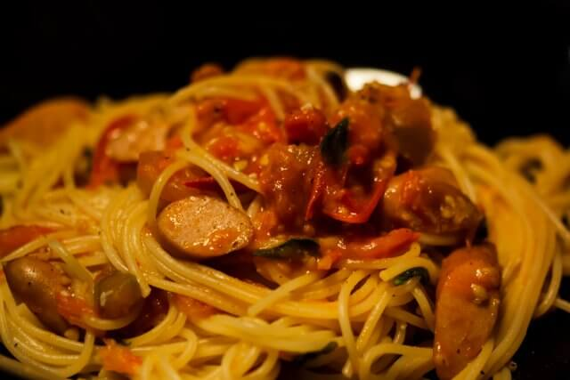
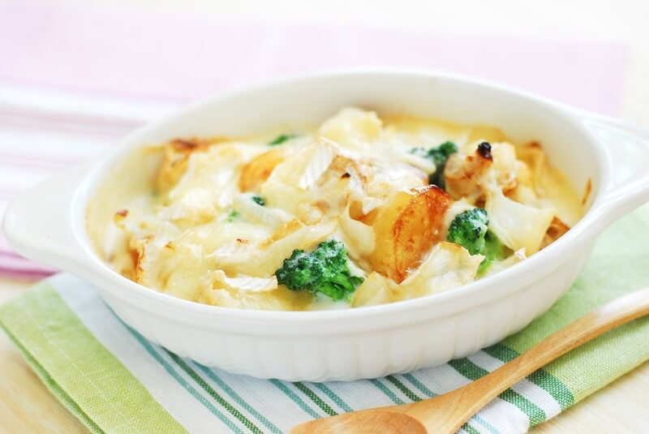

パスタレシピ

作り方
- 塩を入れた水でパスタをゆでる
- フライパンにオリーブオイルを入れ加熱、ニンニクを加え炒める
- 一口大に切ったウインナー、トマト、ほうれん草を入れ炒める
- ゆで上がったパスタ、煮汁、ソースの材料を入れさらに炒める

作り方
- マカロニは塩を入れたお湯でゆでる
- ブロッコリー、玉ねぎを一口サイズに切っておく
- フライパンで具材を炒め、しんなりしてきたら小麦粉、バターを加え炒める
- 牛乳を加え混ぜてマカロニを入れる
- 耐熱容器にできた物を入れピザ用チーズをかけトースターで１０分ほど加熱